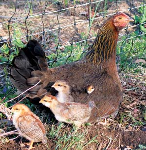
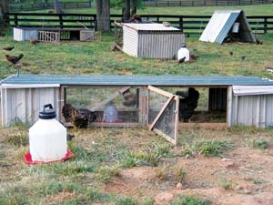
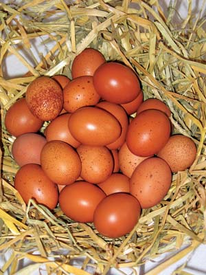
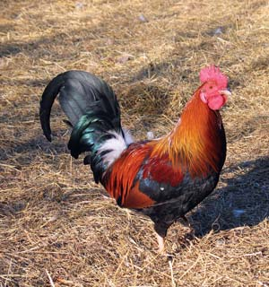
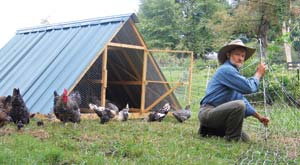

Incredible Homestead Chickens
Easy-to-keep, chickens will provide delicious eggs and meat, plus bug control, fertilizer and tillage.
By Harvey Ussery
December 2007/January 2008
Eggs from backyard flocks are of a quality and nutritional density that those dependent on the supermarket can only dream of. Necessary culling (of excess males and non-productive females) graces the table with flavorful meat. But backyard flocks can contribute to self-sufficiency in more ways than simply putting food on the table. They offer bug control, tillage and great entertainment.
Poultry are incredible starter livestock for most homesteads, because their needs are easily and cheaply met, and the homesteader can start on a small scale.
Coming Home to Roost
One reason poultry are the easiest livestock is that their housing can be simple. All domesticated poultry are hardy and will do well if given protection from predators and the extremes of weather. Any housing that protects the birds from wind, rain and snow will be adequate for your flock. (Remember, too, their need for shade on the hottest summer days.) You should provide a minimum of 3 square feet per adult bird - 4 or 5 would be even better.
Chickens, guineas and turkeys all have an instinct to roost at night and will be more content if given perches to do so. Any structure that allows them to sleep perched above ground level will satisfy their urge to roost.
If there are laying hens in your flock, you should provide nests. I make my own (12 inches high and wide, 16 inches deep) and fill them with straw, leaves or other clean, soft material.
Almost any structure can serve satisfactorily for housing poultry. I strongly advise leaving an earth floor in the coop and covering it with a deep layer (up to 12 inches) of organic matter (see “Deep Litter System: The Best Plan for Chicken Poop,” below).
All domestic poultry are quite cold hardy. They don’t need added heat here in Hume, Va., (with temperatures down to 10 below zero) as long as they are protected from the wind in the coldest weather. I make certain that their house is tight against drafts, while at the same time providing essential ventilation. Occasionally, cocks (males) suffer frostbite to their large combs and wattles (the red, fleshy protuberances on top of and hanging from their heads). If you live further north, you might want to consider breeds such as the chantecler, which have minimal combs and wattles that are almost impervious to frostbite.
Another winter care question is whether to use artificial lighting to mitigate the natural drop in egg production during the dark winter months. My own practice is not to use such lighting. We simply adjust to a greatly reduced egg supply in the winter. But if your flock is in good health and you are feeding them well, you can certainly keep lights on them in the winter without major ill effects. It is most convenient to put the light on a timer. Set the timer to provide earlier light in the morning for a total of 14 hours a day. Allow only natural light in the evening so the birds aren’t surprised when the artificial light suddenly shuts off. A single 40- or 60-watt bulb should be adequate.
Chickens will eat eggs in certain situations; once they start, it’s a difficult habit to break. You can prevent egg eating in the flock by mounting the nests above floor level to keep the cocks from pecking at eggs curiously, providing enough nests (one for every eight hens or so) and collecting eggs regularly.
We never wash eggs if they come from the nest absolutely clean. For cleaning up those with a smear or stain, we use a paper towel dipped in a half-and-half mix of water and white vinegar. Immersing eggs can actually drive bacteria through the shells.
Pasturing the Flock
I strongly urge you to avoid the conventional homestead flock, with the birds confined to their coop and a small, static chicken run. The birds quickly consume or trample all vegetation, and droppings accumulate. It’s better to get the birds out onto healthy, green pasture where they can enjoy the sunshine, fresh air and exercise, and forage a significant part of their diet.
Some flock owners have good results allowing their birds to range free during the day, then penning them up at night for protection, since most predators are nocturnal. For others, different levels and types of predation (your neighbor’s dog, or even your own) or proximity of neighbors’ gardens or flower beds prohibit this approach. Does that dictate a return of the flock to their wretched static run? Not at all. Electric net fencing is a solution that has been a fundamental management tool for me for years. I cannot recommend it highly enough for providing the benefits of pasturing the flock, confining them where you want and protecting them from predators.
Electric net fencing is a plastic mesh with interwoven fence posts. The horizontal strands of the mesh are intertwined with almost hair-fine stainless steel wires. Attached to a fence energizer that’s properly grounded, the fence carries an unpleasant (but not harmful) surprise for unwelcome curiosity seekers. (Search for “Electronet” at Premier 1 Supplies.)
Options for Feeding
It is convenient to buy bagged feed for a flock, and we’d like to think that such “scientifically formulated” feeds are the best diet we can offer our birds. Ask yourself, however: What would the chicken eat if completely on her own in a natural setting? Though we do not think of chickens as grazers, they actually eat a fair amount of grasses, clovers and broadleaf weeds. They relish wild seeds of all sorts and live animal foods such as earthworms, insects, slugs and snails. All of these foods (plants, seeds, small animals) are alive and unprocessed. Commercial feeds are anything but alive or unprocessed; they are made from highly processed ingredients.
I urge you to take the feeding of your flock into your own hands. A willingness to experiment, a bit of research about nutritional needs and access to whole ingredients available in your area are the only requirements.
Whether you buy prepared feeds or make your own replacement mixes (from whole corn, oats, wheat, field peas, kelp meal, etc.), the heart of your feeding program should be maximizing your flock’s access to whole, natural foods. If you pasture your birds, they will find a lot of high-quality food on their own. If you practice vermicomposting to recycle kitchen wastes or manage manure, you can harvest the worms to feed your flock. If you live in an area “blessed” with lots of Japanese beetles, collect them to feed your eager birds.
Putting the Flock to Work
There are many ways to enlist the natural behaviors of the flock to achieve key homestead goals.
Before the era of Monsanto and Cargill, free ranging poultry flocks helped control excess insect populations in orchards. We can utilize our flocks in the same way, confining them to their work if necessary with electric net fencing. Another useful service the flock provides in the orchard is cleaning up dropped fruit, which can harbor disease or overwintering insects.
Though chickens could destroy an established garden with their constant scratching (and they like ripe tomatoes as much as you do!), just prior to the garden season I net my flock onto the garden for two to four weeks. The birds eat sprouting weed seeds as well as slugs and snails.
I usually assign tilling chores to my chickens. If I need to develop new ground for a garden, I net a flock of chickens onto the plot and let them do what they love best, scratching away at that tough sod until it is killed and turned into the top few inches of the soil, in the process boosting soil fertility with their droppings.
The Integrated Flock
There are so many ways our flocks can be integrated into helping us develop food self-sufficiency on the homestead. The examples I have given only hint at the possibilities. The key is liberating them from an isolated corner and making them part of the broader, interwoven patterns of your homestead endeavor.
Which Breeds are Best? Two Experts Offer Advice
Climate, housing situations and goals for the flock all play a part in selecting which breeds (or hybrids) of chickens to keep. Each situation is unique. Here are two expert opinions on breed selection.
Harvey Ussery raises cuckoo Marans, old English games, silver spangled Hamburgs, and an experimental cross (the boxwood broody) for personal use on his homestead in Virginia. Here are Harvey’s views on breed selection:
Recent poultry breeding has been geared toward ever greater specialization - fast-growing meat hybrids ready to slaughter in as little as 44 days or egg-laying hybrids that begin laying at 17 weeks or less and lay impressive numbers of eggs (at least for a couple of seasons). In my experience, such “souped-up” hybrids are less hardy and long-lived, and are apt to succumb to disease or environmental stresses. They require more purchased inputs, both of feed (because they have lower foraging skills) and medication (to compensate for breeding that has emphasized maximum production over robust immune systems).
I much prefer the traditional farm breeds of earlier generations, many of them dual purpose - good layers, usually of large brown eggs, with good rates of growth to table fowl size, though they do not match the super-hybrids in either category of production. Such breeds represent a priceless part of our agricultural heritage: Wyandottes, buff Orpingtons, Plymouth rocks, New Hampshire and Rhode Island reds, buckeyes, Delawares, dominiques, Jersey giants and more.
You may want to choose older historic breeds out of which the modern breeds were developed. Dorkings, which harken back to Roman times, are gentle, elegant birds that are a joy to work with. Old English games are a breed with a 1,000-year history as utilitarian fowl. If given enough space to forage, old English games feed themselves almost entirely on their own, and the hens are among the best chicken mamas on the planet.
Keeping a breed because it’s better at foraging its own feed is eminently sensible for homesteaders. Keeping sturdier breeds likely to have more robust immune response is also practical. Using hens that still remember how to incubate and rear their own young - while not so practical for someone operating on a larger scale to produce income - is the most practical choice for the homesteader who can just set the willing hen to her work and let her get on with it: “Let mama do it” with no management of incubators or artificial brooders.
Robert Plamondon generally raises commercial hybrid layers (usually red sex-links from Privett Hatchery) and modern hybrid broilers. He sells his pasture-raised eggs for $4 per dozen and grass-fed broilers at $3 per pound. Here’s Robert’s take on breed selection:
Standard-bred chickens are and have always been over-hyped. Many breeds are being promoted on the same extravagant claims that were made 100 years ago, when the bar was a lot lower. In fact, the only egg breeds that have ever had any commercial significance in this country are barred Plymouth rocks, Rhode Island reds, New Hampshire reds, white Leghorns and possibly white Wyandottes. Before the introduction of these breeds, the American farmer made do with breeds such as English game, Houdans, Hamburgs and dominiques - low-performing breeds that were abandoned by practical farmers in the mid-19th century. Most breeds, however, never had a following among practical farmers - they have always been hobbyist breeds.
All these breeds grow slowly compared to hybrid broilers. The last time I did the math, I calculated that you would need to charge three times as much per pound just to break even, and I don’t think there’s enough difference in quality to support this; there’s nothing about these broilers that’s worth paying three times as much for. You’d get better results with a “slow-growing” commercial broiler strain (which grow a lot faster than standard breeds), such as Privett Hatchery’s “slow white Cornish” or the “red broilers” and “black broilers” sold by most hatcheries, which are a cross between a modern broiler and something like a New Hampshire red or black australorp, respectively.
If you insist on heritage breeds and want to make a profit, you need to find the highest-producing “egg strains” of these breeds. Because poultry fanciers hold competitions that are essentially beauty contests, any breed can have its performance bred right out of it as a side effect of selecting for beauty alone. When in doubt, call the hatchery and ask the manager for recommendations.
Temperament is always important. I tried at least one new breed a year for many years, before I settled on Privett Hatchery’s red sex-links as the best combination of performance and docility. This is a good strategy for heritage breeds as well. Some of them are nice, but others are nasty.
If profit isn’t a motive, then temperament is key. I’d start with barred rocks. They’re the gold standard of pleasant hens, and they were always a favorite of the American farmer. They’re attractive and most strains lay pretty well. Buff Orpingtons are also a safe bet; though they probably won’t lay as well.
If you don’t plan on selling your eggs, then it’s easy to become overwhelmed by the production of even a small flock, so choosing high-producing chickens might be more of a curse than a blessing. I’ve always suspected that this is why backyard poultry breeders have such inflated opinions of their flock’s performance. If they’re drowning in eggs, their flock must have great production, right?
Deep Litter System: The Best Plan for Chicken Poop
If you use a non-movable coop, I strongly advise leaving an earth floor and covering it with a deep layer (up to 12 inches) of organic matter. When coops cannot be moved to fresh ground frequently, the deep litter system is the best arrangement for safe and less labor-intensive manure management. Chickens, constantly scratching, quickly work their droppings into the litter where decomposition is driven by microbes similar to those in a compost heap. Metabolites (byproducts of the microbes’ life processes) include vitamins and immune-enhancing substances, which the chickens ingest as they peck up little critters they find in the litter.
Materials for litter should be as high in carbon as possible and include leaves and wood shavings. Sawdust and wood chips can be used, though they should be aged first. I avoid straw because it can support the growth of harmful molds.
The microbes use nitrogen in the droppings as an energy source as they break down the litter into simpler elements. As the carbon in the litter is used up, the nitrogen can no longer be utilized efficiently by the microbes and begins outgassing as ammonia. Ammonia is bad for your birds’ respiratory tissues, so that first whiff of ammonia is your signal to add fresh material or clean out the litter. Materials higher in nitrogen, such as hay and soybean vines, don’t work as well for litter, because they decompose too quickly.
Deep litter also is labor-saving. You might need to shovel out the equivalent of finished compost once a year or so, and you can use it in the garden without further processing.
If you need to use an existing building with a wood or concrete floor, that’s OK. You can still use a deep layer of organic material as the foundation of proper manure management (straw in this context is fine, since it stays drier). In this case, the litter does not break down as completely and will need to be composted before use in the garden.
There is one potential problem with deep litter over an earth floor - the exposure of your flock to digging predators. It’s a grueling initial chore, but it’s imperative to dig a metal roof flashing or half-inch hardware cloth barrier 18 inches deep around the perimeter of your poultry house.
Harvey Ussery is committed to helping revive small-scale backyard poultry production. Visit his Web site here.
|
 HARVEY USSERY Not all chicken breeds have a strong instinct to hatch eggs and nurture young. To foster these traits, the author is working on an experimental cross of old English games and rose comb Dorkings. |
 HARVEY USSERY Pasturing the flock is the best thing you can do for your birds’ health and for nutrient-rich eggs and meat. Pasture shelters can be designed in all shapes, sizes and materials to meet specific needs. |
 HARVEY USSERY High quality eggs are one of many great reasons to keep a flock of chickens. |
|
 HARVEY USSERY Your backyard flock can help preserve our historic breeds. The old English game breed has a thousand-year history as a utilitarian farm fowl. |
 ISTOCKPHOTO/LADD VAN TOL Barred Plymouth rocks are quite productive. Many people find the black and white barring attractive. |
 HARVEY USSERY Electric net fencing is an excellent management tool for getting the flock onto the pasture, while confining them where you want and protecting them from predators. |